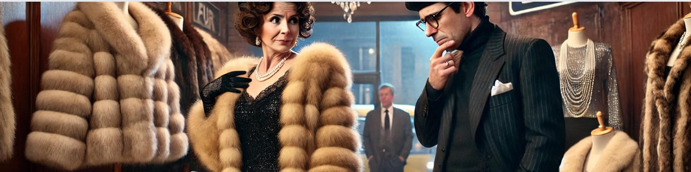

Tra sogno e realtà

🎵 Ascolto: "Il viale del tramonto"
1. Il mistero dei costi nella pellicceria:
2. Il confronto dei gioielli:
3. I pantaloni e i jeans:
4. Il consiglio della commessa:
5. La classifica della gentilezza secondo la contessa:
6. La Lamborghini contro l'autobus:
Leggete ora il testo scritto per controllare le vostre risposte e verificare i vostri dubbi in autonomia.
Un giorno, una signora entra in una pellicceria con un uomo al seguito. Lei è di mezza età, elegante ma vestita come una diva degli anni '50; lui sembra uscito da un film noir con quel completo nero e il berretto dello stesso colore. La signora guarda le pellicce in esposizione, e ne vede due che le piacciono. “Posso provarle?”, chiede. “Ma certo, Signora”, risponde il commesso. “Sono indecisa”, dice lei, osservando le pellicce. “Lo zibellino mi sembra un po’ pesante. E poi... quanto costa, scusi?”. “Lo zibellino 6.800 euro, Signora, il visone 2.900”. “Beh, sono entrambe così belle che le prenderei tutte e due,” dice lei. “Ottima scelta, Signora”, dice il commesso, che ormai già sogna la sua provvigione. Ma l’uomo che la accompagna interviene: “Io non prenderei né l’una né l’altra”. La signora lo guarda, contrariata. “Germano! Ma che dice! Scusi, eh, il mio autista non è molto educato. Comunque per le pellicce ci penserò”, e escono dal negozio como due divi di Hollywood.
Subito dopo si dirigono verso una gioielleria. La signora vede due anelli, uno con un diamante e l’altro con un rubino enorme. “Quale mi consiglierebbe?”, chiede al gioielliere. “Vede, Signora, il diamante ha più luce del rubino, ma il rubino è più caldo. Dipende dal Suo stile”, risponde il gioielliere, già pregustando la vendita. “Io, per non sbagliare, li prenderei tutti e due,” dice lei. “Io invece non prenderei nulla, Signora Contessa”, interviene di nuovo Germano, con la delicatezza di un elefante. “Germano! Ma Lei è proprio senza speranza... viene dalla campagna, Lo scusi... non sa come ci si comporta e non capisce il valore delle cose. Comunque ci penserò, grazie”, e se ne escono dal negozio.
Proseguono in un negozio di abbigliamento. Anche qui, la signora è indecisa tra un paio di pantaloni di pelle nera, attillatissimi, e un paio di jeans strappati, pieni di brillantini. La commessa, un po' imbarazzata, suggerisce: “Forse dovrebbe guardare in un altro negozio, queste taglie non fanno per Lei”. “Ma no, sono perfetti! Certo, i pantaloni sono più eleganti, ma i jeans sono così... moderni. Che ne dice, Germano?”. “Io tornerei a casa, Signora Contessa”, sbotta lui, esausto. E ancora una volta escono senza avant comprato niente.
Infine, passano davanti a una concessionaria di auto. La contessa si ferma a osservare le vetrine. “In effetti, una macchina nuova non ci starebbe male, Germano”. Lui sospira profundamente, ma non dice niente. “Quella Lamborghini andrebbe a pennello con lo zibellino di prima, ma l’Alfa Romeo è una macchina più affidabile della Lamborghini, non è vero?”. Questa volta, continuano a camminare, senza neanche entrare nell’autosalone.
Arvivano alla fermata dell’autobus. La signora, ancora offesa, borbotta: "Che cafona quella commessa! Solo perché è più giovane e più magra di me... Il commesso della pellicceria, invece, sì che era un gentiluomo. Non trova, Germano?". Proprio in quel momento arriva l’autobus. La contessa e Germano salgono, trovano due posti liberi e si siedono. “Ah, Germano, mi sono scordata: non ho monete. Potrebbe fare i biglietti Lei, per favore?”.
1. Un giorno, la contessa Prosciuttoni (ENTRARE) in una pellicceria, insieme al suo autista. La contessa, che ormai non (ESSERE) più giovanissima, (PORTARE) dei vestiti che (ANDARE) di moda vent’anni prima; l’autista, più giovane di lei, (INDOSSARE) un completo nero e un berretto dello stesso colore.
2. La contessa (VEDERE) due pellicce che le (PIACERE) , e (CHIEDERE) informazioni al commesso. Il commesso (DIRE) che lo zibellino è più caro del visone, ma che è molto più elegante; il visone però è più leggero dello zibellino, perché lo zibellino ha il pelo più lungo.
3. La contessa (PROVARE) le due pellicce e (DIRE) che in effetti il visone (ESSERE) più morbido e più leggero dello zibellino. Lei (COMPRARE) volentieri tutte e due le pellicce, ma l’autista (CONSIGLIARE) di non prendere né l’una né l’altra.
4. Poi la contessa Prosciuttoni e il suo autista (ANDARE) in una gioielleria. La contessa (VEDERE) due anelli che le (SEMBRARE) interessanti, e (CHIEDERE) consiglio al gioielliere. Il gioielliere (SPIEGARE) che il diamante ha più luce del rubino, mentre il rubino è più caldo. A parte questo, il diamante è più classico del rubino e sta bene con tutto. La contessa (PRENDERE) tutti e due gli anelli, ma il suo autista (ESSERE) di parere contrario e la (CONVINCERE) a uscire dal negozio senza comprare niente.
5. Dopo (ANDARE) in un negozio di abbigliamento. Anche qui la contessa (ESSERE) indecisa: non (SAPERE) se prendere un paio di pantaloni di pelle o un paio di jeans strappati con i brillantini. Secondo lei i pantaloni (ESSERE) più eleganti dei jeans, ma anche meno pratici.
6. La commessa (CONSIGLIARE) di andare in un altro negozio, e Germano (CONSIGLIARE) di tornare a casa. La contessa (PENSARE) che la commessa (ESSERE) una maleducata; il commesso della pellicceria (ESSERE) molto più gentile di lei.
7. Tornando a casa, (PASSARE) davanti alla vetrina di un autosalone. La contessa (FERMARSI) a guardare. Secondo lei, (AVERE) bisogno di una macchina nuova; Germano (SOSPIRARE) , ma non (DIRE) niente.
8. La contessa (VEDERE) una Lamborghini e un’Alfa Romeo. La Lamborghini (ESSERE) più piccola dell'Alfa Romeo, ma secondo lei (ESSERE) anche più prestigiosa e più chic. L’Alfa Romeo, invece, (SEMBRARE) più comoda e più spaziosa della Lamborghini. La contessa comunque (PENSARE) che per lo zibellino (ESSERE) più adatta la Lamborghini.
9. La contessa e l’autista (ARRIVARE) alla fermata dell'autobus. Dopo un po’ (ARRIVARE) anche l’autobus, e loro (SALIRE) . (TROVARE) due posti liberi e (SEDERSI) . Però la contessa non (AVERE) i soldi per comprare i biglietti, così (DOVERE) pagare Germano.